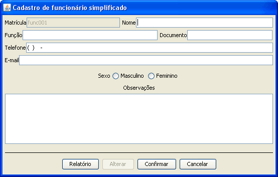
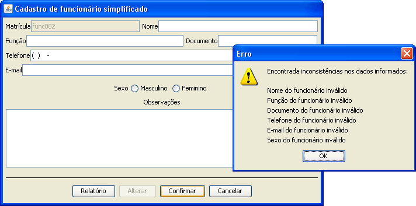
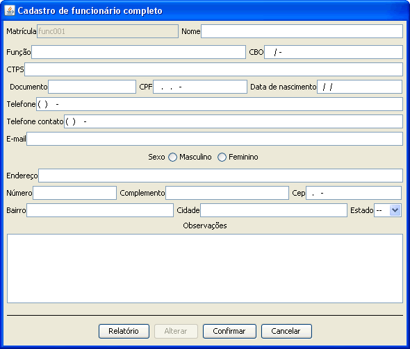
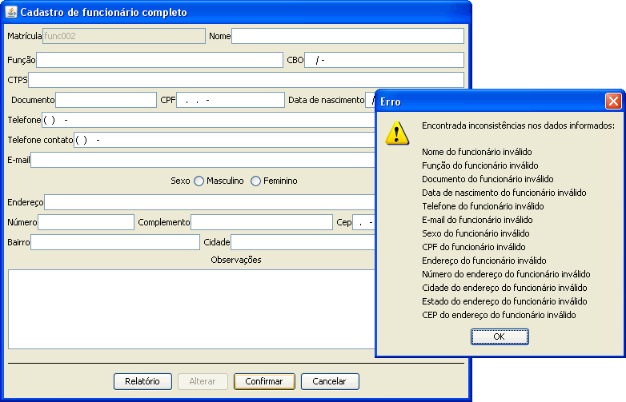

Para cadastrar um novo funcionário é necessário escolher o tipo de formulário que deseja preencher o simplificado ou o completo.

O cadastro simplificado não é necessário inserir dados como endereço é somente para se ter um controle sobre vendas e visitas básicos realizadas pelo funcionário.

O cadastro simples exige que seja inseridos alguns dados tendo-os como essênciais. A falta de algum deles impedirá o cadastro do funcionário.

O cadastro completo ja é necessário inserir dados como o endereço do funcionário. Este tipo de formulário permite alcançar um nível maior de gerenciamento.

O cadastro completo tem como essênciais dados mais completos sobre o funcionário. A falta de algum deles impedirá o cadastro da empresa cliente.